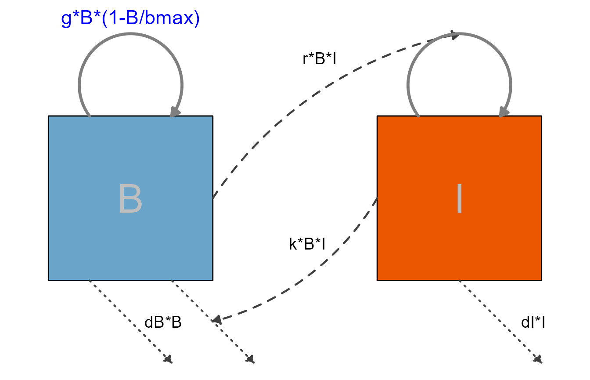
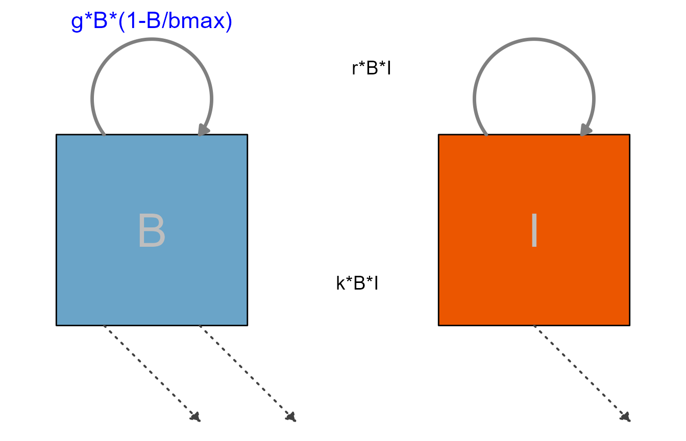

The previous tutorials/vignettes showed several example models as way to illustrate how to use flowdiagramr.
This vignette is a (growing) list of additional model examples, which might be helpful to illustrate further ways of using the package.
Currently not working, is here to remind us to extend to more then 2 variables.
This is a model that describes the infection or vaccination dynamics of an acute viral infection in a simplified manner. The model tracks virus/antigen (H), and a few immune response components. These are the differential equations for the model.
\[ \begin{aligned} \textrm{Antigen} \qquad \dot{H} & = - kAH - c H \\ \textrm{Interferon} \qquad \dot{F} & = p - m F + q (F_{max} - F) \frac{H}{H + n} \\ \textrm{CD4 T-cells} \qquad \dot{T} & = \frac{FHT}{FH + h_T} + g_TT \\ \textrm{B-cells} \qquad \dot{B} & = g B(\frac{r_H HF }{s_1 + HF} + \frac{r_T TF}{s_2 + TF}) \\ \textrm{Antibodies} \qquad \dot{A} & = r B - kAH - d A \\ \end{aligned} \]
This is the same information formatted as a structure that can be used as input for prepare_diagram.
PREPARE_DIAGRAM CURRENTLY ERRORS OUT ON THIS. IT SHOULD THEORETICALLY WORK, I THINK THE MODEL AND FLOWS ARE PROPERLY SPECIFIED. BUT THE FLOWS MIGHT BE TOO COMPLEX TO PARSE?
variables = c("H","F","T","B","A")
flows = list(H_flows = c("-kA*A*H", "-dH*H"),
F_flows = c("pF" ,"-dF*F", "H/H + hH) * gF * (fmax - F)"),
T_flows = c("F*H*T/(F*H + hT)" ,"+ gT*T"),
B_flows = c("gB * B * rH*F*H/(s1+F*H)", "gB * B *rT*F*T/(s2+F*T)" ),
A_flows = c("rA*B", "- dA*A", "- kA*A*H")
)
model_list = list(variables = variables, flows = flows)
#diagram_list <- prepare_diagram(model_list)
#varnames = c("Antigen","Interferon","T-cells","B-cells","Antibody")This is the simple predator-prey model, with some styling applied.
First, we specify the model again. We did a bit of renaming here, what we called pathogen before is now called bacteria and labeled B and the Immune response is abbreviated as I. Parameter names have been adjusted accordingly, but otherwise it is the same model you already saw.
# specify the model
variables = c("B","I")
flows = list(B_flows = c("+g*B*(1-B/bmax)", "-dB*B", "-k*B*I"),
I_flows = c("+r*B*I", "-dI*I"))
ppmodel = list(variables = variables, flows = flows)Next, we prepare the input list of data frames
# prepare inputs
pp_diagram_list <- prepare_diagram(ppmodel)Now we apply some styling:
# get element names
update_diagram(pp_diagram_list)
#> No settings were provided; returning names of elements in diagram_list dataframes.
#> Variables: B, I
#> Flows: m_gB1Bbmax, m_rBI, e_dII, e_dBB, e_kBI, i_kBI, i_rBI
# define adjusted settings for layout
diagram_settings1 = list(
var_fill_color = c(B = "#6aa4c8", I = "#eb5600"),
var_label_color = c(all = "gray"),
var_label_size = c(all = 12),
flow_label_color = c(main = "blue"),
flow_label_size = c(main = 6),
flow_line_color = c(main = "grey50", interaction = "grey25"),
flow_line_type = c(main = "solid", interaction = "dashed"),
flow_line_size = c(main = 1.2, interaction = 0.8)
)
pp_diag_list2 <- update_diagram(pp_diagram_list, diagram_settings1)
# make diagram with adjusted settings
diag2 <- make_diagram(pp_diag_list2)
plot(diag2)
For the next diagram, we are turning off the interactions and only show the main flows, that means processes that actually move some entity (here bacteria and immune response) from one state to the next. Any settings pertaining to the styling of the not shown components are ignored.
# specify custom settings for the diagram layout
diagram_settings2 <- list(
flow_show_arrow = c(interaction = FALSE),
flow_show_label = c(external = FALSE)
)
pp_diag_list3 <- update_diagram(pp_diag_list2, diagram_settings2)
diag3 <- make_diagram(pp_diag_list3)
plot(diag3)
As you can see, not showing the interactions or not labeling some of the flows doesn’t produce a very useful diagram. In general, as long as it is decently readable, you should show and label all components of your model.
Here is another example, the model shown with vertical alignment
THIS LOOKS PRETTY BAD AT THE MOMENT
varlocations <- matrix(data = c("B", "I"),
nrow = 2, byrow = TRUE)
mysettings <- list(varlocations = varlocations)
diag_list <- prepare_diagram(ppmodel, mysettings)
diagram_settings = list(var_label_text = c(B = "Bacteria", I = "Immune Response"),
var_label_size = c(all = 4)
)
diag_list2 <- update_diagram(diag_list, diagram_settings)
mydiag <- make_diagram(diag_list2)
plot(mydiag)